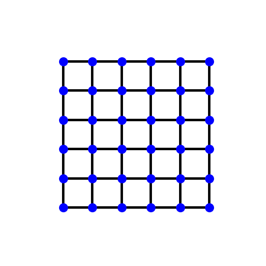
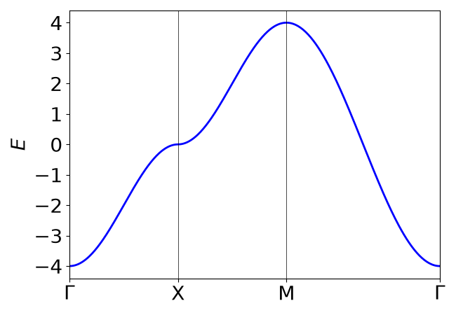
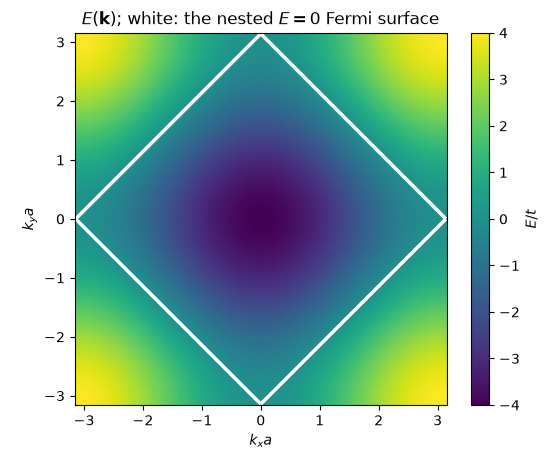
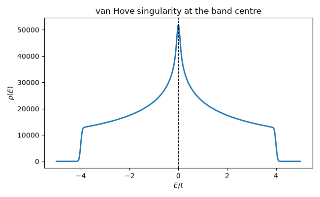

Note
Go to the end to download the full example code.
The Square Lattice: Bloch’s Theorem in its Simplest Form#
The smallest complete illustration of Bloch’s theorem: one orbital per unit cell on a square lattice, nearest-neighbor hopping only. With a single orbital the Bloch Hamiltonian \(H(\mathbf{k})\) is a \(1\times1\) matrix, so “diagonalizing” it is nothing but reading it off, and the whole band structure is one closed-form expression,
periodic on the Brillouin zone torus exactly as Bloch’s theorem requires. Everything the rest of this gallery does to richer models – paths through high-symmetry points, Brillouin-zone meshes, densities of states – is visible here against an answer that can be checked by hand.
import numpy as np
import matplotlib.pyplot as plt
from tbkit.lattice import Lattice
from tbkit.system import System
from tbkit.plot import Plot
from tbkit.kspace import KSpace, reciprocal_vectors
from tbkit.dos import density_of_states
a = 1.
t = 1. # H = -t sum_<ij> c_i^dag c_j, so the band minimum sits at Gamma
unit_cell = [{'tag': 'a', 'r0': (0., 0.)}]
prim_vec = [(a, 0.), (0., a)]
The lattice#
One orbital per unit cell, repeated by \(\mathbf{a}_1=(a,0)\) and \(\mathbf{a}_2=(0,a)\). Each site has four nearest neighbors, all at the same distance, all with the same amplitude.

The reciprocal lattice is square too, with \(\mathbf{b}_i = (2\pi/a)\hat{\mathbf{e}}_i\), so the Brillouin zone is the square \([-\pi/a, \pi/a]^2\).
b1 = (6.2832, -0.0000), b2 = (-0.0000, 6.2832)
The Bloch Hamiltonian#
set_hopping() takes one representative of
each hopping – here the two bonds to the right and upward neighbor,
labelled by the lattice vector \(\mathbf{R}\) that separates the
cells – and adds each Hermitian conjugate itself. Bloch-summing the
four resulting bonds gives
\(H(\mathbf{k}) = -2t(\cos k_x a + \cos k_y a)\) directly.
sq = KSpace(lat)
sq.set_hopping([{'i': 0, 'j': 0, 'R': (1, 0), 't': -t},
{'i': 0, 'j': 0, 'R': (0, 1), 't': -t}])
def band(kx, ky):
'''The closed form, to check the Bloch sum against.'''
return -2. * t * (np.cos(kx * a) + np.cos(ky * a))
rng = np.random.default_rng(0)
ks_test = rng.uniform(-np.pi/a, np.pi/a, size=(200, 2))
assert np.allclose(sq.get_bands(ks_test)[:, 0], band(ks_test[:, 0], ks_test[:, 1]))
print('Bloch sum reproduces -2t(cos kx a + cos ky a) at 200 random k-points.')
Bloch sum reproduces -2t(cos kx a + cos ky a) at 200 random k-points.
Bands along Gamma - X - M - Gamma#
The standard path through the high-symmetry points of the square Brillouin zone. The band runs from \(-4t\) at \(\Gamma\) (\(\mathbf{k}=0\), every bond bonding) up to \(+4t\) at \(M=(\pi,\pi)/a\) (every bond antibonding), crossing \(E=0\) at the zone edge \(X=(\pi,0)/a\): a total bandwidth of \(8t\), which for a lattice of coordination number \(z\) is just \(2zt\).
G, X, M = (0., 0.), (np.pi/a, 0.), (np.pi/a, np.pi/a)
ks_dist, en = sq.k_path([G, X, M, G], nk=120)
fig_bands = sq.plot_bands(node_labels=[r'$\Gamma$', 'X', 'M', r'$\Gamma$'],
figsize=(6.5, 4.5))
for label, k, expected in [('Gamma', G, -4.*t), ('X', X, 0.), ('M', M, 4.*t)]:
value = float(sq.get_bands([k])[0, 0])
print('E({:<5}) = {:+.4f} (expect {:+.4f})'.format(label, value, expected))
assert np.isclose(value, expected)
assert np.isclose(en.max() - en.min(), 8.*t)

E(Gamma) = -4.0000 (expect -4.0000)
E(X ) = +0.0000 (expect +0.0000)
E(M ) = +4.0000 (expect +4.0000)
The band over the whole Brillouin zone#
A single smooth sheet, periodic in both directions. Its minimum is the zone centre and its maxima are the four zone corners; the \(E=0\) contour is the square joining the four X points. That contour is the half-filled Fermi surface, and it is perfectly nested: the vector \(\mathbf{Q}=(\pi,\pi)/a\) maps each of its edges onto the opposite one, which is why the half-filled square-lattice Hubbard model orders antiferromagnetically at arbitrarily weak coupling.
nk = 201
kx = np.linspace(-np.pi/a, np.pi/a, nk)
kxx, kyy = np.meshgrid(kx, kx, indexing='ij')
e_grid_2d = sq.get_bands(np.column_stack([kxx.ravel(), kyy.ravel()]))[:, 0]
e_grid_2d = e_grid_2d.reshape(nk, nk)
fig_bz, ax_bz = plt.subplots(figsize=(5.6, 4.6))
mesh = ax_bz.pcolormesh(kxx, kyy, e_grid_2d, cmap='viridis', shading='auto')
ax_bz.contour(kxx, kyy, e_grid_2d, levels=[0.], colors='w', linewidths=2.5)
ax_bz.set_aspect('equal')
ax_bz.set_xlabel('$k_x a$')
ax_bz.set_ylabel('$k_y a$')
ax_bz.set_title(r'$E(\mathbf{k})$; white: the nested $E=0$ Fermi surface')
fig_bz.colorbar(mesh, ax=ax_bz, label='$E/t$')
fig_bz.tight_layout()
assert np.isclose(e_grid_2d.min(), -4.*t) # Gamma
assert np.isclose(e_grid_2d.max(), 4.*t) # the four zone corners

Density of states: the van Hove singularity#
The saddle point of \(E(\mathbf{k})\) at X – a maximum along one zone direction and a minimum along the other – makes the density of states diverge logarithmically at \(E=0\), the van Hove singularity of the 2D square lattice. Broadening cuts the divergence off at a finite peak, but the pile-up of states in the middle of the band, and the sharp edges at \(\pm4t\), are unmistakable.
en_mesh = sq.mesh_bands(nk=400)
energies, dos = density_of_states(en_mesh, broadening=0.05,
e_grid=np.linspace(-5., 5., 601))
fig_dos, ax_dos = plt.subplots(figsize=(6.5, 4.))
ax_dos.plot(energies, dos, lw=2.)
ax_dos.axvline(0., color='k', ls='--', lw=1.)
ax_dos.set_xlabel('$E/t$')
ax_dos.set_ylabel(r'$\rho(E)$')
ax_dos.set_title('van Hove singularity at the band centre')
fig_dos.tight_layout()
peak = energies[np.argmax(dos)]
print('DOS peaks at E = {:+.3f} (expect 0, the van Hove energy).'.format(peak))
assert abs(peak) < 0.1
# and it really is a peak, not a plateau: at this broadening the centre
# carries about three times the weight of a point midway out towards the
# band edge (the unbroadened divergence is logarithmic, so the height of
# the peak itself is set by `broadening`, not by the physics).
ratio = dos[np.argmin(np.abs(energies))] / dos[np.argmin(np.abs(energies - 2.))]
print('rho(0)/rho(2t) = {:.2f}'.format(ratio))
assert ratio > 2.5

DOS peaks at E = +0.000 (expect 0, the van Hove energy).
rho(0)/rho(2t) = 2.97
Total running time of the script: (0 minutes 3.293 seconds)